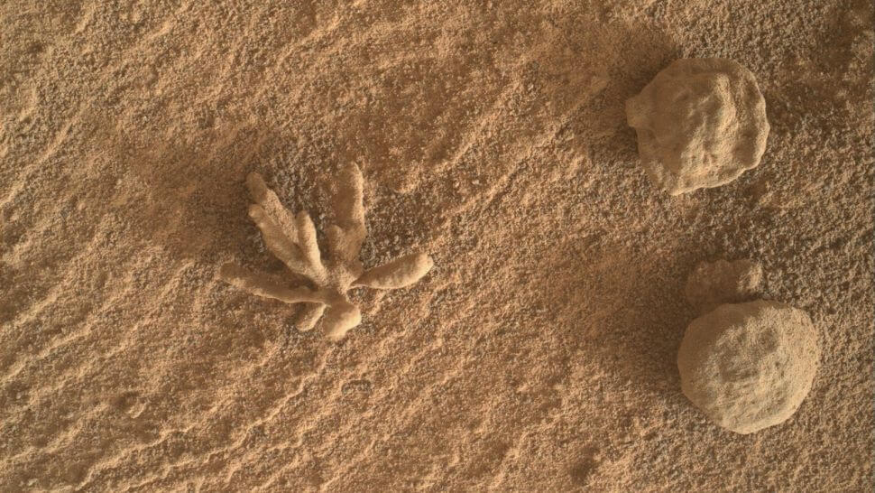
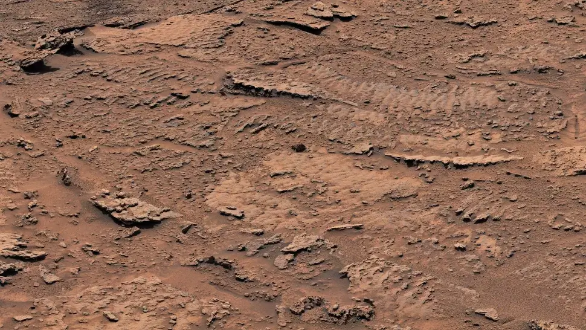

ဒီပုံမှာ တွေ့ရတဲ့ မားစ် ကျောက်တုံးလေး တစ်တုံးရဲ့ ပုံဟာ ကျောက်ဖြစ်ရုပ်ကြွင်း ဖြစ်နေတဲ့ စာအုပ် တစ်အုပ်နဲ့ ချွတ်ဆွတ် တူနေပါတယ်။
ဒီပုံကို Curiosity Rover က ပြီးခဲ့တဲ့ ဧပြီလ ၁၅ ရက်နေ့က ရိုက်ယူပေးပို့ ခဲ့တာ ဖြစ်ပါတယ်။ ဒါဟာ သတေသနယာဉ် မားစ်ပေါ်ကို ရောက်နေတာ အင်္ဂါဂြိုဟ် ရက်နဲ့ဆို ရက်ပေါင်း ၃,၈၀၀ တင်းတင်း ပြည့်တဲ့ နေ့လဲ ဖြစ်ပါတယ်။
ဒီပုံကို ရိုဗာ သုတေသန ယာဉ်ရဲ့ စက်ရုပ်လက်မောင်းမှာ တပ်ဆင်ထားတဲ့ Mars Hand Lens Imager (MAHLI) ကင်မရာနဲ့ ရိုက်ယူ ခဲ့တာပါ။ ဒီပုံက ကျောက်တုံးဟာ ဖွင့်ထားတဲ့ စာအုပ် တစ်အုပ် နဲ့ တူနေပြီး အလယ်က ကျောက်ချပ်လွှာ ကတော့ လှန်လက်စ စာမျက်နှာနဲ့ တူနေပါတယ်။
ဒီ ကျောက်တုံးဟာ စာအုပ် တစ်အုပ်နဲ့ တူနေပေမယ့် အရွယ်အစား ကတော့ စာအုပ် တစ်အုပ်ထက် အများကြီး သေးငယ်ပါတယ်။ ဒီ ကျောက်ရဲ့ အရွယ်ဟာ ကန့်လန့်ဖြတ် ကိုမှ အကျယ် ၁ လက္မပဲ ရှိပါတယ်။
နာဆာက တာဝန်ရှိသူ တစ်ဦးကတော့ ဒီလို ထူးဆန်းတဲ့ ပုံသဏ္ဍာန် ရှိတဲ့ ကျောက်တုံးတွေဟာ မာစ်ပေါ်မှာတော့ ပေါပေါများများ တွေ့ရလေ့ ရှိပါတယ် လို့ ရှင်းပြပါတယ်။
အခု ကျောက်တုံး ဒီလိုပုံ ဖြစ်နေရတာဟာ ကျောက်သားတွင်းက တွင်းထွက်သတ္တုတွေ ရေနဲ့ ပျော်ဝင် သွားတဲ့ အတွက် မပျော်နိုင်တဲ့ ကျောက်သားတွေချည်း ကြွင်းကျန်ရစ်ရာက ဖြစ်ပေါ်လာတာ ဖြစ်တယ်လို့ နာဆာ တာဝန်ရှိသူက ဆက်ရှင်းပြပါတယ်။
ဒီ ကျောက်တုံးဟာ အရင်ကတော့ မြစ်ကြမ်းပြင်က နှုံးမြေတွေ အောက်ထဲမှာ နစ်မြုပ် နေခဲ့ဟန် တူပါတယ်။ ဒါပေမယ့် နှစ်သန်းပေါင်း များစွာ ကြာအောင် လေတိုက်စား မှုကြောင့် နှုန်းမြေတွေ လွင့်သွားတဲ့ အခါမှာ ဒီ ကျောက်တုံး ထွက်ပေါ် လာရတာ ဖြစ်ပါတယ်။
ပြီးခဲ့တဲ့ ၂၀၂၂ ဖေဖော်ဝါရီ လတုန်းကလဲ Curiosity Rover ကပဲ ကျောက်ခက်ပန်းပွင့်ပုံ ကျောက်တုံးလေး တစ်တုံး ရှာတွေ့ ခဲ့ပါသေးတယ်။ ဒီ ကျောက်ပွင့်လေးဟာ အရွယ်အစား ၁ စင်တီမီတာ လောက်ပဲ ရှိပါတယ်။

သိပ္ပံ ပညာရှင် တွေဟာ မာစ်ပေါ်မှာ ရှေးက မြစ်တွေ ဖြတ်သန်း စီးဆင်းမှုကြောင့် ဖြစ်ပေါ် ကြွင်းကျန် ရစ်ခဲ့တဲ့ ဘူမိဗေဒ သွင်ပြင် လက္ခဏာ အများအပြားကို ရှာတွေ့ ထားပါတယ်။ ဒီ ဘူမိဗေဒ သွင်ပြင် တွေထဲမှာ တက်ဒီ ဝက်ဝံ မျက်နှာနဲ့ တူတဲ့ ကျောက်တုံး တစ်တုံးလဲ ပါဝင်ပါတယ်။
